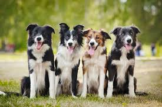

The Best Dogs You Could Possibly Have!
 The Australian Shepherd, a lean, tough ranch dog, is one of those 'only in America' stories: a European breed perfected in California by way of Australia. Fixtures on the rodeo circuit, they are closely associated with the cowboy life. The Australian Shepherd, the cowboy's herding dog of choice, is a medium-sized worker with a keen, penetrating gaze in the eye. Aussie coats offer different looks, including merle (a mottled pattern with contrasting shades of blue or red). In all ways, they're the picture of rugged and agile movers of stock. Aussies exhibit an irresistible impulse to herd, anything: birds, dogs, kids. This strong work drive can make Aussies too much dog for a sedentary pet owner. Aussies are remarkably intelligent, quite capable of hoodwinking an unsuspecting novice owner. In short, this isn't the pet for everyone. But if you're looking for a brainy, tireless, and trainable partner for work or sport, your search might end here.
The Australian Shepherd, a lean, tough ranch dog, is one of those 'only in America' stories: a European breed perfected in California by way of Australia. Fixtures on the rodeo circuit, they are closely associated with the cowboy life. The Australian Shepherd, the cowboy's herding dog of choice, is a medium-sized worker with a keen, penetrating gaze in the eye. Aussie coats offer different looks, including merle (a mottled pattern with contrasting shades of blue or red). In all ways, they're the picture of rugged and agile movers of stock. Aussies exhibit an irresistible impulse to herd, anything: birds, dogs, kids. This strong work drive can make Aussies too much dog for a sedentary pet owner. Aussies are remarkably intelligent, quite capable of hoodwinking an unsuspecting novice owner. In short, this isn't the pet for everyone. But if you're looking for a brainy, tireless, and trainable partner for work or sport, your search might end here.
The Golden Retriever, an exuberant Scottish gundog of great beauty, stands among America's most popular dog breeds. They are serious workers at hunting and field work, as guides for the blind, and in search-and-rescue, enjoy obedience and other competitive events, and have an endearing love of life when not at work. The Golden Retriever is a sturdy, muscular dog of medium size, famous for the dense, lustrous coat of gold that gives the breed its name. The broad head, with its friendly and intelligent eyes, short ears, and straight muzzle, is a breed hallmark. Goldens are outgoing, trustworthy, and eager-to-please family dogs, and relatively easy to train. They take a joyous and playful approach to life and maintain this puppyish behavior into adulthood. These energetic, powerful gundogs enjoy outdoor play. For a breed built to retrieve waterfowl for hours on end, swimming and fetching are natural pastimes.
The Border Collie is a British breed of herding dog of the collie type of medium size. It originates in the region of the Anglo-Scottish border, and descends from the traditional sheepdogs once found all over the British Isles. It is kept mostly as a working sheep-herding dog or as a companion animal. It competes with success in sheepdog trials. It has been claimed that it is the most intelligent breed of dog.